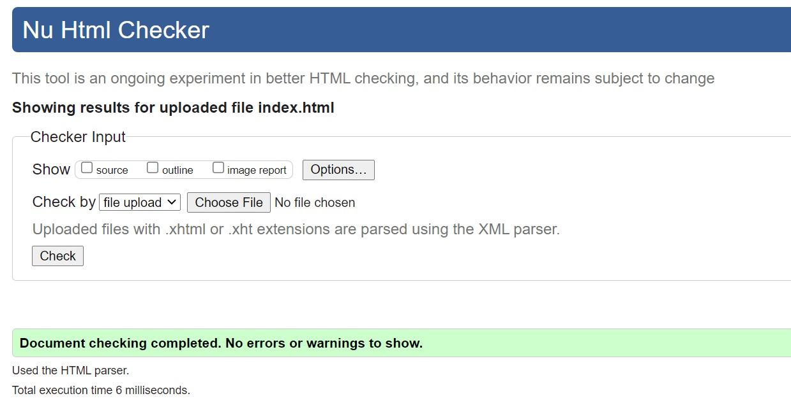

REPORT
Objective:
It’s main objective is to make sure that we (students) learned all the things they taught us i.e. HTML and CSS to make the website and also to manage the GitHub.
Introduction:
First assignment of the module CSY1018(Web Development) where the things that I had learned in the classes are used. This website consists of different HTML tags and CSS which I learned in the college. Here I have used different CSS3 properties such as transition, transform, animation and so on. I have also made the website responsive. I took help from different sites and got some ideas to how to make the website which I had cited and given reference at last. The website consists of 5 pages as per the assignment we(students) got. i.e. index.html, portfolio.html, contact.html, cv.html and report.html . All this pages consist of all the things that assignment asked for us .
Module Experience:
Personally, before learning about HTML and CSS in the college, I used to think that CSS must be really difficult to learn. As the time passes by and I started to join the classes in the college through online & physically, it is not that difficult. While learning I used to be very excited because every day, week I learned new thing about HTML and CSS. As I learned about it lecture class and use it in practically in tutorial, I was happy to know about it and upgrade my skills. It seemed as if my mind was an empty bucket in the context of CSS and I have added some knowledge of CSS and its properties in it along with HTML tags.
Experience:
I, while making the website using the HTML and CSS, got to know about different new tags and it’s use as per the situation. At the beginning, I didn’t even what to do and all. I read that assignment mail for many times then I got some idea in it. At first didn't got the idea exactly how to do it but i tried some as much as I got it. Some pics are given below in the form of before and after about the pages.
Before
After
In the above picture we can see the difference.At first image,the nav bar was not well placed as it was in second image. In the beginning I just placed the photo as it was and just some text as in picture. Later on, I made the photo circular and also used hover and animation in that part. I made the photo in circular shape,as I got inspiration from instagram when i used it.
We can also see the similar background. Personally, I prefer light colors rather then the darker one so by using the HTML color codes I got that color code and used that color in gradient with white.
Before
After
Here also the nav bar was same as it was in the home page. In the first picture i had just made the form,later after I knew that must add our contact details also I added my contact details in another fieldset.
Before
After

Before in the CV page, I just uploaded my image, and some details which was arranged using display grid. Later on I got know about the range slider through the w3school,then I used it to display my skills detail.
Reference
- Cheng, L., 2020. UX Collective. [Online] Available at: https://uxdesign.cc/how-i-shipped-my-new-design-portfolio-under-5-hours-1bc817deed54 [Accessed 19 May 2021].
- Vector Stock, 2020. Vector Stock. [Online] Available at: https://www.vectorstock.com/royalty-free-vector/placeholder-rgb-color-icon-vector-32173552 [Accessed 20 May 2021].
Validation:
